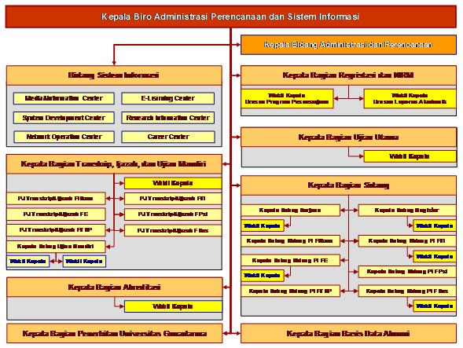

Sesuai dengan kebijakan umum pada UG Good University Governance yang menyatakan bahwa Pengelolaan Sistem Informasi menjadi wewenang dan tanggung jawab Biro Administrasi Perencanaan dan Sistem Informasi, yang berada di tingkat Universitas dan bertanggung jawab ke Rektor Universitas Gunadarma melalui Wakil Rektor sesuai dengan lingkup kerjanya, Biro Administrasi Perencanaan dan Sistem Informasi (BAPSI) merupakan salah satu unit struktural yang ikut mempunyai kontribusi dalam perencanaan, pengembangan, implementasi dan pemeliharaan fasilitas teknologi informasi di Universitas Gunadarma. Fungsi dan wewenang BAPSI secara umum bersifat koordinatif bersama unit pelaksana dan unit terkait lainnya dalam peningkatan layanan informasi akademik dan pembelajaran berbasis teknologi informasi dan komunikasi.
BAPSI merupakan unit kerja di tingkat universitas yang berada di bawah Rektor serta jajaran Wakil Rektor, sesuai dengan struktur organisasi Universitas Gunadarma. Struktur Organisasi BAPSI secara keseluruhan selengkapnya dapat dilihat pada gambar di bawah ini.
Fungsi dan wewenang BAPSI secara umum bersifat koordinatif bersama unit pelaksana dan unit terkait lainnya dalam peningkatan layanan informasi akademik dan pembelajaran berbasis teknologi informasi dan komunikasi. Pada tahun 2007 ini, BAPSI membentuk unit kerja khusus yaitu Network Operation Center (UG-NOC), System Development Center (UG-SDC), Media and Information Center (UG-MIC), E-Learning Center (UG-ELC), dan Research Information Center (UG-RIC). Kelima unit baru tersebut melengkapi struktur BAPSI sebelumnya, khususnya yang terkait dengan layanan Sistem Informasi.
| No | Unit Kerja | Deskripsi Kerja | |
|---|---|---|---|
| 1 | Network Operation Center (Pengelola Inherent) | (1) Instalasi, pemeliharaan, dan monitoring jaringan komputer (backbone, intranet, internet, wireless); (2) Layanan akses dan koneksi internet; (3) Bandwidth management and policy; (4) Pemberdayaan layanan INHERENT, (5) Pengukuran kinerja layanan intranet dan internet (internet usage); (6) Trouble shooting, risk assessment, & DRP; dan (7) Inventory check list fasilitas jaringan komputer dan komunikasi data | |
| 2 | System Development Center | (1) Pengembangan sistem informasi akademik sesuai dengan kebutuhan atau permintaan stakeholder; (2) Pengembangan fitur layanan official website; (3) Dokumentasi sistem informasi; (4) Pembuatan User Guide; (5) Pelatihan end-user; (6)Pembuatan portofolio aplikasi yang berjalan; dan (7) Identifikasi kebutuhan sistem yang akan datang bersama-sama dengan calon pengguna sistem | |
| 3 | E-Learning Center | (1) Koordinasi pengembangan materi e-learning dengan unit terkait; (2) Pemeliharaan dan monitoring portal e-learning (termasuk staffsite&studentsite); (3) Pengembangan content management&SOP implementasi e-learning; (4) Diseminasi/pelatihan e-learning ke dosen dan mahasiswa; dan (5) Monitoring pemanfaatan e-learning oleh dosen dan mahasiswa | |
| 4 | Media & Information Center | (1) Content provider untuk website gunadarma.ac.id, UG-News, UG-TV, UG-Radio; (2)Helpdesk untuk media informasi Gunadarma (website dan elektronik); (3) Monitoring website yg content updating-nya didesentralisasi; (4) Layanan data untuk pihak eksternal; (5) Public education berbasis TIK, (6) Bantuan layanan promosi publik; dan (7) Survey kepuasan pengguna akhir dan feedback mechanism | |
| 5 | Research Information center | (1) Penanggung jawab content management untuk ejournal dan repository system; (2) koordinasi dengan content provider untuk content-updating ke ejournal dan repository system; (3) diseminasi dan sosialisasi ejournal dan repository system; dan (4) Kerja sama dengan pihak eksternal dalam penyediaan materi untuk e-journal dan repository system. | |
Kalau kaliah mendaftar atau berkuliah di kampus UG, pasti kalian akan merasakan hal ini. Kalian akan merasakan bagaimana rasanya berkuliah bukan di kampus yang sama setiap harinya. Kenapa bisa? UG sendiri terletak di empat lokasi yang berbeda. Kampus D terletak di jalan Margonda Raya, Kampus E, G, dan H yang berada di jalan yang sama yaitu jalan akses UI, Cimanggis, kota Depok, dan satu lagi terletak di jalan Raya Kalimalang, kota Bekasi.
Last updated 3 mins ago
Berbeda dengan kampus lain yang berstatus Perguruan Tinggi Negeri (PTN), UG memiliki fasilitas parkir yang sangat bagus. Hanya di UG, kalian yang menggunakan alat transportasi sepeda motor akan parkir di gedung parkiran yang langsung terhubung dengan gedung kampus. Motor kalian dijamin akan aman dari serangan matahari, hujan, dan tentunya aman dari pencuri karena terdapat petugas yang menjaga parkiran ini.
Last updated 3 mins ago
Kalau kamu mendapat jadwal kuliah di hari rabu dan gedung berada kampus E, maka kamu akan menemukan banyak motor vespa klasik dari tahun 1960 hingga keluaran tahun terbaru yang parkir di kampus E. Deretan motor vespa yang parkir adalah milik mahasiswa yang bergabung dengan komunitas vespa Gunadarma. Komunitas gunadarma yang udah terbentuk dari tahun 2009 yang dikenal dengan Vespa Gunadarma.
Last updated 3 mins ago